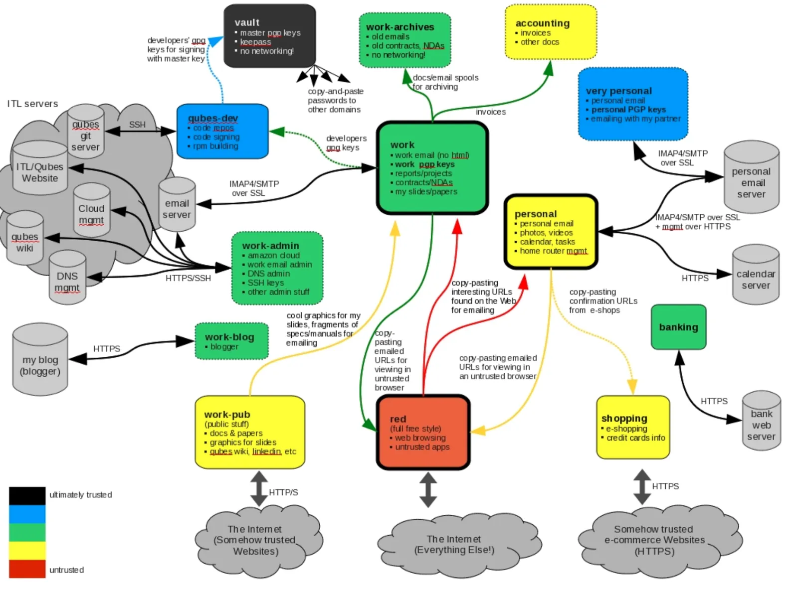
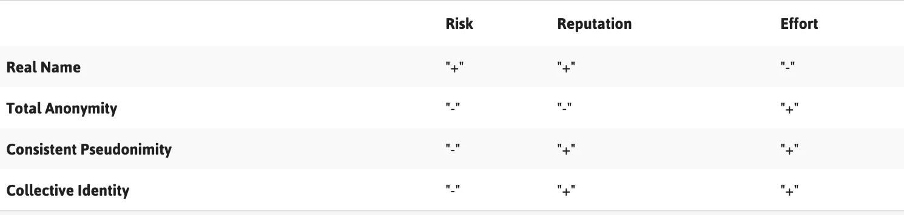
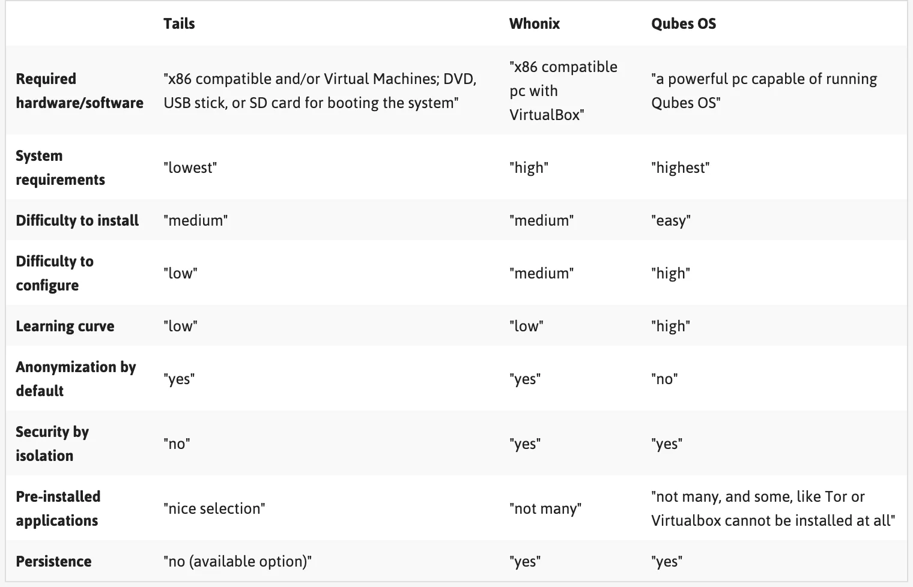

分身術完整指南：妥善管理您的線上身份並獲得安全的方法
轉自 iYouPort; 原文似乎翻譯或引用了一些外部資訊，但沒有註明來源。
noarch 注：原文格式非常亂 - “英文與全形齊飛，括號共連結一色。” noarch 儘可能修復了原文中的死鏈和對符號的錯誤使用，但沒有時間使其完全遵守
privacy.noarch的格式規範。同時，iYouPort 的文章風格與
privacy.noarch大相徑庭：privacy.noarch主要以線性的，易於跟隨的新手教程為主；iYouPort 則因為貢獻者眾多，風格各異，大多結構鬆散。雖然不是非常好讀，但這個文章確實能幫你為多重身份做準備。
在閱讀之前，noarch 還請你注意這篇文章似乎不太清楚“威脅模型”和你的實際情況；例如它可能會叫你刪除你的 Facebook 帳號，而很可能你本來就沒有 Facebook 帳號，或你目前的 Facebook 帳號就足夠匿名。它還假設你有一定的 IT 技術，例如叫你使用 Qubes OS. 這個話題在
privacy.noarch的背景下比較複雜，但 noarch 考慮在完成privacy.noarch的主要目標後寫一些 Qubes OS 的注意事項。
歡迎來到知識點欄目！今天的主題是數字陰影，尤其是避免的方式（零基礎版）。希望這些內容能給您帶來幫助 - - 對於所有人，只要您在網際網路上，而不僅僅是敏感人士 - - 關於什麼是資料？什麼是數字陰影？如何避免被追蹤迫害？如何變成另一個人？尤其是如何*分裂*為多個不同的人？這個遊戲會很有趣 Enjoy!

網際網路是探索、學習、說話、傾聽和與世界各地人們交流的絕佳場所。不幸的是，網際網路也成為一個挑戰主流語話的獨立思考者經常發現自己受到攻擊的空間。這些攻擊可能非常個人化、具有強烈的針對性 — — 因為網際網路上經常會有很多關於我們的個人資訊。
為了加強你對這些攻擊的防禦，從評估自己的數字陰影開始是個好主意。這些陰影 — — 可以講述一個關於我們的故事：我們是誰、我們生活和閒逛的地方、我們感興趣的東西，以及我們的朋友和同事都是誰。這可能會讓我們面臨幾種威脅。特別是，你留下的公開可用數字足跡會導致你面臨各種騷擾和操縱。
不過，你還可以使用許多策略和工具來塑造或控制自己的數字陰影，增加自己的隱私，並最終線上和離線時更加安全 — — 並不會減少您的聲音或線上活動。
這些例子包括通過有意識地從內容和元資料中剝離有價值的資訊來控制自己被暴露的資料量；嘗試“自我毀滅”的藝術；並思考如何操弄和拆散自己的線上身份。
尤其是中國讀者。如果您關心如何抵制社會信用評分的危害 ——這篇文章中介紹的內容就是您唯一能做的事。
當局的懲治手段非常具有目的性：通過對使用交通工具的限制作為懲罰，將極大地阻礙分數低”的人的行動參與和聯合能力。
換句話說，如果某人線上表現出抵抗和反對，當局要確保此人無法直接行動。
於是，您能懂得這篇文章的意思。
關於如何能夠做到暢所欲言、成功組織，而不會導致被捕的詳細指南 —— 這裡是最全版。
任何希望保護安全的人都適用。
數字陰影都是什麼？
數字陰影可以定義為資料說出的關於你的故事。這些數字陰影是由數萬億位元的資料建立的，當我們連線到網際網路時，每天都會留下數字痕跡。你的數字陰影擁有自己的生命，受到他人的影響，並以不可預測的方式發生變化。這些痕跡是我們過去和現在活動的幽靈，它們以永久的和不斷變化的形象融合在一起。
這些萬億位元的資料是如何建立的？我們用於瀏覽網際網路、訪問網站、連線到 Facebook 和 Twitter 等社交網路平臺、釋出部落格帖子、接聽電話、傳送簡訊或電子郵件、使用聊天或線上購物的裝置和軟體，都建立了特定的位關於我們的資料。
這些資料可以包括我們的名字、位置、聯絡人、圖片、訊息、推文和點贊，還包括我們的計算機品牌、打電話時間和訪問的網站的資訊。這些資料痕跡可以由我們自己和其他人一起提供。
如何共享資料？在某些情況下，人們會積極分享資料 — — 例如，當我們在 Facebook 上分享照片、線上預訂機票或發帖子時。其他人也可以通過在圖片中標記我們、在推文中提及我們、或僅僅通過與我們溝通來積極地分享關於我們的資料。
在其他情況下，我們每個人都在不知不覺中提供了大量的資料，而沒有考慮是否“同意”。當你通過“cookies”和其他在後臺活動的跟蹤技術訪問網站時，你的瀏覽習慣和IP地址是共享的。這些技術就嵌入在我們訪問的網站中，並且從網站分析到廣告，被收集的共享資訊可用於廣泛的目的。
手機應用程式也在你不知情或未經同意的情況下收集資料 — — 例如，我們拍攝的照片通常會在其中嵌入位置資料。當從一種服務轉移到另一種服務時，這些跟蹤技術使 Web 服務能夠識別和關注你。
什麼是資料？資料可以分為三個部分：內容、元資料和噪音。
-
內容是我們的訊息、部落格、推文和電話的內容，包括照片和視訊。元資料是關於資料的資料，是技術基礎設施工作所需的資訊。
-
元資料使我們的電子郵件能夠交付，幫助在我們的計算機上查詢檔案並允許行動通訊。元資料可以是我們的電子郵件地址，電話號碼，位置，傳送或儲存訊息的時間和日期。
-
噪聲是由製造過程或基礎設施的工作所產生的資料。例如，每臺相機都有一張SD卡來記錄和儲存圖片。每張SD卡都有獨特的劃痕，這些劃痕是由生產SD卡的機器建立的。這些劃痕會對眼睛看不到但可被計算機識別的資料進行微小的更改。
誰在收集我們的資料，為什麼？
資料收集和資料分析已變得非常複雜。您遺漏的資料痕跡將由各方收集、分析和分類，以建立數字陰影或配置檔案。每次收集新資料時，都可以識別並新增到您的個人資料中。這些配置檔案不斷擴充套件，為建立它們或有權訪問它們的人提供了對您本人的真實洞察力。
公司、政府和個人為各種目的收集這些資料。它可以買賣；可以用來操縱和控制；或者可以用來制定騷擾策略。
數字陰影或配置檔案可用於深入瞭解我們是誰、我們做什麼、以及我們去過哪裡。然後，可以使用這些資料來預測我們可能會做什麼或將來可能會去哪裡。例如，如果有人知道我們是x國家中關於性別問題的直言不諱的博主，他們就會知道我們可能會參加一個關於該國部落格和女權主義的會議。配置檔案還可以使潛在的騷擾者能夠在不同平臺上騷擾我們。
**任何人都有可能訪問你的數字陰影 — — 包括通訊服務提供商、執法機構和商業公司，以及執行自己的伺服器的團體和個人。**我們無法準確知道自己的數字陰影究竟發生了什麼，而這本身就是一個問題。
但是，我們可以使用工具和策略來管理數字陰影、並限制其在剖析和監視方面的影響。後面就是用來討論這一問題的。
探索你自己的數字陰影
正如之前提到的，任何人都可以訪問你的數字陰影 — — 包括通訊服務提供商、執法機構和公司，以及執行自己的伺服器的團體和個人。那麼怎麼辦？建議從下面開始：
-
使用 Trace My Shadow 探索自己的個人數字陰影 — https://myshadow.org/trace-my-shadow — 這是由 Tactical Tech 推出的工具；
-
通過安裝名為 openpaths.cc 的工具來檢查手機。一些應用可以看到相同的東西。請仔細閱讀服務條款，並瞭解您是否可以更改手機中的訪問許可權設定。在 iPhone 上，可以在其隱私設定下更改每個應用的許可權。更多詳見《您真的理解應用許可權都授予了什麼嗎？這裡是保護您安全的重要知識》
控制您共享的內容和元資料
好訊息是我們可以部分控制我們提供的內容和元資料。
當在網路上釋出內容之前，最好自問一下，你釋出的內容是公開的還是個人的，以及誰可以訪問它。即使這些資訊與公共活動有關而不是與我們的個人生活有關，提到的名字或上傳的圖片也可能會讓人聯想到我們是誰、我們在做什麼、在哪裡做等等。希望定位你的人就可以使用它。
這並不意味著你應該保持沉默 — — 只需採取一些基本措施，你可以通過提高攻擊難度來減弱風險：
-
在必需分享有關自己生活的個人詳細資訊時，務必設定為僅僅所選的聯絡人可訪問私人資料。在商業社交媒體上使用私人資料時，應該瞭解該平臺隱私政策的定期更改，這可能會影響我們的個人資料的“私密性”。
-
在網上和公共可訪問的社交網路資料上撰寫或釋出有關公共活動的影象時，應該首先問自己，你傳播的有關單個人、地點和其他細節的資訊是否可用於識別和/或攻擊某人。或者只在公共活動結束後才公佈有關公共活動的資訊。
-
可以使用名為 ObscuraCam 的工具匿名化圖片中的面部，ObscuraCam 是 Android 裝置的免費相機應用程式。 https://guardianproject.info/apps/obscuracam
-
在向Web服務提供個人資訊時，最好使用 HTTPS 以使通訊通道安全。
-
使用強密碼，併為您使用的每個 Web 服務使用不同的密碼 — — 如果您為多個服務使用相同的密碼，並且有人攔截了其中一個服務的密碼，就可以使用它來訪問您的其他帳戶。
-
註冊 Microsoft Office，Libre Office，Adobe Acrobat 等裝置或軟體時，不要使用真實姓名有助於防止在使用此裝置或軟體時建立的元資料與您的身份連線。您也可以關閉手機或相機中的GPS追蹤器。
-
某些檔案型別包含的元資料多於其他檔案型別，因此線上釋出內容時，您可以將檔案從包含大量元資料的檔案格式（例如.doc和.jpeg）更改為不包含元資料的檔案格式（例如.txt和.png） ，或者我們可以使用純文字。
-
使用 Metanull for Windows 從影象檔案中刪除元資料：https://securityinabox.org/en/lgbti-africa/metanull/windows
-
編輯或刪除 PDF 檔案中的隱藏資料，Windows 或 MAC OS 使用者可以使用 Adobe Acrobat XI Pro 等程式（可以使用試用版）。 GNU / Linux 使用者可以使用 PDF MOD，這是一個免費的開源工具。但是，它不會刪除建立或修改時間戳，也不會刪除有關用於建立 PDF 的裝置型別的資訊。
-
有關從不同檔案格式中刪除元資料的更多資訊，請參閱我們上一次同欄目中的介紹《大清洗：反偵察的第一步》
-
您可以通過安裝 Privacy Badger 或 Adblock Plus 等附加元件，以及監控自己的隱私設定、定期刪除 Cookie 來阻止通過瀏覽器的跟蹤和收集元資料。
-
使用 Tor 將隱藏特定的元資料，如我們的 IP 地址，從而增加線上匿名性。
社交領域
正如安全專家 Bruce Schneier 所解釋的那樣，“安全是一個鏈條，任何一個薄弱的環節都可以打破整個系統”。
我們每個人都屬於多個社交領域 — — 我們的工作或倡導網路，我們的家庭網路，朋友和團隊。其中一些網路可能需要比其他網路更多的安全。
例如，我們可能傾向於為我們的工作或倡導活動提供更安全的溝通實踐，但在社交網路上與朋友互動的安全性就會相對較低。這些領域相交可能會對我們的安全構成威脅。
如果你在所有領域中使用單一身份，則可以更輕鬆地收集到有關你的一切資訊並識別出你的漏洞。
例如，如果你在社交網路中透露自己喜歡某種特定型別的遊戲，並且使用了像 Emule 這樣的 p2p 程式下載檔案，那麼想要調查你的工作或倡導活動的攻擊者，就可能會通過欺騙你下載遊戲而令你感染間諜軟體。這是所有社交工程伎倆中最最簡單的一種。也是為什麼說很多失敗都源於你說得太多了。
**這個攻擊者對你的倡導活動和政治立場很感興趣，但他知道你在這部分生活中增加了隱私和安全措施。同時攻擊者也知道你對遊戲的熱愛（或任何一種偏好都一樣）是數字弱點，因為這個網路沒有加密。**因此，攻擊者就可以利用你生活中無法加密的這一部分來獲得入侵其他加密部分的入口。
很簡單，這就是因為你的工作 — 敏感部分 和 生活 — 不敏感部分，沒能徹底分開的原因；也是為什麼要一直**強調分離你的社交領域，為不同領域選取完全不同的身份 — — 彼此之間不要發生任何聯絡。**這就是身份管理。詳細內容請參見《抗議須知》和《角色扮演》
自我人肉
幾乎所有人都知道人肉搜尋是什麼意思。Doxing（也稱為“doxxing”或“D0xing”）描述了使用網際網路上免費提供的來源追蹤或收集有關某人的資訊的方法。此方法的成功取決於攻擊者識別有關其目標的有價值資訊的能力，並將此資訊用於他們自己的惡意目的。
Doxing 的前提是“你越瞭解你的目標，就越容易找到他或她的缺陷”。反過來看，對你來說就是：最瞭解的你的人是最危險的人。你應該努力讓僅僅經過驗證的極少部分親密人瞭解你，並且你選擇的對方必須是和你具有同樣高層次的保護意識的個人。
就如 IYP 在社交工程演示中所強調的那樣，騷擾者和潛行者會使用多種工具和技術來收集有關其目標的資訊，但由於這些工具和技術大多是公開的且易於使用的，你也可以自己使用它們。參見《偵查和欺騙：這裡是社交工程攻擊必備的技術工具》《資訊收集：決勝的根基 》
很有必要推薦這一工作，因為你很可能完全不知道自己在他人眼中是什麼樣，尤其是不知道自己在監視者和所有惡意行為者眼中是什麼樣。“自我人肉”工作就是讓你看清自己的必要工作 — — 它可以幫助你就線上共享內容和方式做出明智的決定。
當然，這項工作也可用於識別他人，在你決定給予對方完全信任的許可權之前，上述相同的工具可以幫助你判斷是否值得給出這樣的信任。
用於 doxing 的方法包括瀏覽檔案、黃頁、電話簿、和其他公開資訊；查詢 Google 或 DuckDuckGo 等常用搜索引擎；在特定服務中尋找一個人的個人資料；在公共論壇和郵件列表中搜索資訊；或尋找目標已共享的影象（例如，可能還發布在另一個更個人的帳戶中）；也可以簡單地通過“whois搜尋”查詢網站所有者的公共資訊。
您自己就可以使用這些相同的工具來探索其他人可以輕鬆找到的關於你的資訊。
在開始探索這些 Web 服務並尋找你的數字自我之前，一個好主意是使用像 Torbrowser 這樣的匿名工具。
我們將在本欄目的下一篇文章中介紹更多自我人肉工具和技巧。
刪除你的過去，建立新身份
“一旦有什麼東西在網際網路上，它將保留在網際網路上，因為網際網路不會忘記”。這句話如今已經家喻戶曉。
你可能認為從社交網路和 Web 服務中刪除某些敏感資料可能足以保護自己，但你不能輕易刪除元資料。在我們的整個生活中 — — 在我們所有的工作和個人領域 — — 如果只使用一個身份 — — 就已經建立了大量可用於描述或攻擊我們的資訊。
**要避免這種情況的一個選擇是：留下舊身份，並建立一個或多個新身份 — — 給每個社交域一個完全不同的身份角色。**你也可能選擇在其中某些領域使用自己的真實身份，在其他領域使用建立的新替代身份。
以下是當你開始做這件事時的基本注意事項：
-
當你開始建立新身份時，應該仔細選擇每個身份的聯絡人，並避免與你用於不同活動的其他身份共享聯絡人。這樣才能有效地建立單獨的社交域，包括單獨的帳戶、郵件地址、瀏覽器配置檔案、應用程式，甚至可能是裝置。
-
重要的是：要確保你持有的各種身份不以任何方式相互關聯、更不能與你的真實身份相關聯。請記住，其中一些相關性可能很脆弱而你沒有發現：例如，你是否使用真實的電話號碼註冊了一個新的假名 Gmail 帳戶？這是在自己挖坑。
-
將你的每個額外身份視為潛在的一次性身份可能很有用，因為如果它們受到了損害，你就可以很容易地丟棄它們。
-
在適當的情況下，可以為新認識的熟人建立關於你的一次性身份 — — 你可以使用介紹性配置檔案在將其包含在更受信任的網路中之前，瞭解某人。
別急，後面還有更多具體介紹。
刪除身份
如果你決定通過建立多個身份來區分自己的不同領域，那麼你應該做出的第一個決定就是刪除或保留你已經擁有的身份或特性。
要做到這一點，就必須從調查你的現有身份或特性的痕跡開始。也就是上面介紹的自我人肉。
以下是在你在刪除的時候需要知道的：
-
自殺機器 (https://suicidemachine.org) 是一個便於刪除社交網路配置檔案的工具。自殺機器已經被迫停止刪除 Facebook 帳戶，但有關如何執行此操作的說明如下：(https://www.facebook.com/help/224562897555674)
-
AccountKiller (https://www.accountkiller.com)提供了有關如何刪除大多數熱門網站上的帳戶或公開個人資料的說明。
-
JustDelete Me (https://justdelete.me)是一個直接連結目錄，用於從Web服務中刪除帳戶。
對映你的社交域
為了區分你自己的不同社交域，就要首先將它們映射出來，並確定哪些可能使你最容易受到跨域攻擊，這是很有幫助的。
你可以通過考慮自己不同的活動和網路來做到這一點，並反映每個活動和網路的敏感程度。這將使你能夠更好地區分敏感域和非敏感域。
將一個人的數字生活劃分為單獨的普通社交域（或“機密安全”域）需要一些思考。
波蘭電腦保安研究員 Joanna Rutkowska 就此進行了廣泛的工作，是她開發的基於“隔離安全”概念（Qubes OS）的 Linux 發行版。
在此係統中，每個社交域都在一個單獨的虛擬機器中隔離。雖然 Rutkowska 的計劃非常複雜並且專注於她的作業系統，但它可以為我們提供有關如何開始考慮分離不同域的有趣見解。
Rutkowska 為自己確定的三個基本領域是：“工作”，“個人”和“紅色”（也就是不受信任的、不安全的區域）。
-
工作域包括她的工作電子郵件，在那裡她保留她的工作 PGP 金鑰，在那裡她準備報告、幻燈片、論文等。她還有一個不太受信任的“work-pub”域，比如接受 LinkedIn 邀請或下載她的簡報的圖片。為了增強這一點，她有一個“工作管理員”和一個“工作部落格”域，以便進一步提高管理公司伺服器的安全性並在她的部落格上寫作。
-
個人域包括所有與工作無關的內容 — — 例如個人電子郵件和日曆、假日照片、視訊等。她為此增加了一個名為“非常個人化”的特殊區域，當她離家時，就用這個域與她的伴侶進行交流。這對夫婦使用加密郵件進行通訊，為此目的，她有單獨的PGP金鑰。
-
紅色域完全不受信任。這是她的一次性身份或簡介所屬的地方。Rutkowska 使用此域來執行不適合其他域的所有內容，並且不提供任何敏感資訊。
-
除了這三個主要領域外，Rutkowska 還有其他幾個獨立的域。一個致力於購物，用於訪問電子商務網站；定義此域的是訪問她的信用卡號碼和她的個人地址（用於運送）。然後是保險庫域，她最終信任的地方，她生成並保留所有密碼（使用 KeePassX）和主 GPG 金鑰。最後，她擁有一個獨立域為所有 Qubes development ("qubes-dev").
當然，你可能不必以如此複雜的方式分離自己的域，並且使用 Qubes Os 將它們分開只是一個解決方案 — — 而且需要一個強大的機器來執行。
然而，Rutkowska 對域對映的思考方式完全可以成為分析我們自己的活動的啟發性起點，並將我們的社交域分割開以增強安全性。
下圖顯示了不同域之間的資料流動：

你可以看到很多資料流都是從更受信任的域到不太受信任的域 — — 例如，複製和貼上在工作域中通過電子郵件收到的 URL ，以便可以在不受信任的紅色中開啟它，或者將通過電子郵件收到的發票從工作域傳送到會計域。
但遺憾的是，還有一些資料流從不太受信任的域轉移到更受信任的域。一個例子是複製和貼上一個有趣的 URL，是剛剛在紅色域中瀏覽時偶然發現的，你想與工作域中的同事或朋友分享，所以你需要將其複製並貼上到工作（同事）或個人（朋友）域的電子郵件中。
現在，將資料從不太受信任的域複製到更受信任的域，是一個重大問題。雖然人們可以認為將 URL 貼上到 Thunderbird 電子郵件編輯器是一個無害的操作，但它仍然是一個不受信任的輸入 ；將更酷的圖形檔案從 Web 複製到工作域中的例子可能更可怕，只是為了在演示幻燈片中使用，通過惡意 JPEG 或其他圖形格式發起的攻擊，以及利用渲染程式碼中的漏洞已經存在有十多年了。
但是不幸的是，這個問題 — — 如何處理從不太受信任的系統到更可信賴的系統的資料流 — — 在實踐中不容易解決。
不過，設計和構建供軍方和政府使用的高安全性系統的一些人採取了一種相反的方式 — — 他們說他們並不關心信任度較低的域向信任度較高的域的資料傳輸，只要他們能確保沒有辦法以相反的方向進行轉移就行了。
因此，如果我們可以構建一個系統來保證更可靠的域永遠不會將資料傳輸到不太受信任的域（即使這兩個域都被洩露了！），那麼他們很樂意允許單向“向上傳輸”。在實踐中，這意味著我們需要消除兩個合作域之間的所有隱蔽通道。合作這個詞在這裡是一個關鍵詞，這使得整個想法根本不實用，恕我直言。
在該方案中確實需要消除合作域之間的隱蔽通道，因為假設來自較不可信域的資料傳輸確實可能危及更可信的域。
但至少，這不應該導致任何資料洩漏回原始域，不太受信任的域可能與之相聯。這裡的假設之一是這種系統的使用者連線到多個孤立的網路。即使在那種情況下，消除域之間的所有隱蔽通道也是一個巨大的挑戰，可能只有在我們準備好大大犧牲系統性能時才能完成。
可以肯定的是，不可能在不久的將來消除 Qubes 域之間的合作隱蔽通道。我只是不相信這種方法，也不喜歡這種方法無法保護更受信任的域的完整性 — 它只關注隔離方面。因此，攻擊者可能無法將祕密洩露回較不受信任的域，但他或她可以在此更受信任的域中執行其他操作。如果我們不保持誠信，隔離有什麼用呢？
這種傳輸的替代解決方案是擁有可以處理特定檔案型別（如 JPEG）的可信“轉換器”或“驗證器”，並確保我們在目標域中獲得非惡意檔案。雖然這可能會讓你想到舊的 A / V 技術，但它有所不同。
在這裡，可信轉換器可能是一些用安全語言編寫的程式，執行在另一個受信任的域中，而不是一個醜陋的 A / V，其中包含一個巨大的資料庫，包含可能出現在 JPEG 檔案中的“壞”模式的簽名。
這種方法的明顯問題是有人必須編寫這些轉換器，併為我們希望允許轉移到更可信域的所有檔案型別編寫。目前暫時忽略這個問題。或者說，根據使用者的個人風險評估（威脅模型）來決定該怎麼做。
評估風險和潛力：如何選擇適合我們目的的線上身份
“真實”還是虛擬身份？
一旦確定了不同的社交域以及與之相關的數字活動和聯絡人，你需要做的是決定是否要相應地區分自己的身份，或者是否願意堅持自己的正式身份和真實面貌對他們每個人。
你可能希望將自己的工作與法律層面上的“真實”身份聯絡起來，或者認為行動主義應該是匿名的，這些是需要仔細考慮和衡量的決定。
例如，一名記者發現使用真實身份進行寫作比較方便，那麼就可能決定通過暱稱與自己的個人域保持聯絡。另一方面，如果活動家一直在被政府追蹤，決定使用化名進行線上活動，那麼就應該考慮自己將在現實世界中所有相關活動中展示的身份，例如在會議上發言或參加示威遊行。因此，她的線上筆名將與她的臉相關聯；但她的臉也可能與她在社交網路上的真實姓名有關聯，她的線上活動家身份也就被揭露了。
在評估在給定環境中使用哪種身份時，問自己以下這些問題會很有幫助：
-
如果我的真實身份在這種背景下被人知道，我的工作、生計或安全是否會受到威脅？
-
如果我被人知道參與了X活動，我的心理健康或穩定會受到影響嗎？
-
如果我的真實身份在這種情況下被人知曉，我的家人或其他親人是否會受到任何傷害？
-
我能夠並且願意安全地保持各領域不同的單獨身份嗎？
一旦我們評估了風險，就可以考慮線上分離自己的身份的不同策略。評估風險很簡單，需要問自己：我要防禦的人是誰？他們有什麼技術能力？我最脆弱的地方在哪？我願意為保護自己的資產和人身安全付出多少努力？
線上分離身份的策略
維護單獨身份的策略範圍可以從完全透明到完全匿名，不同等級。
作者 Kate Harding 談到她決定以她的真實姓名開始寫作，駁回了博主們通常會採取的建議，例如“以化名寫作，如果你是一位女士，那就採用男性化或中性化”的部落格……掩蓋一個人的個人資訊，謹慎地釋出可識別性細節，不要寫任何可能激怒瘋子的東西“……
Harding 說，騷擾問題應該由包括男性在內的整個社會來處理，而不是讓女性負責。這就好像部分中國的異議人士所說的：“政府不應該監視和騷擾我，而不是我應該為避免騷擾做什麼”。**這顯然是不可能的。**好在 Harding 也承認，實名的決定是非常危險的。
因此，我們有幾種選擇：可以嘗試匿名線上參與，可以使用“持久假名”。或者只在有些時候使用真名，並在其他時間使用假名。以下將談論每種方式的優缺點，以便您可以選擇合適自己的方法。
匿名
完全匿名既可以是孤立的，也可能是較難維護的，但是在我們不需要獲得其他人更多的信任時、當我們可以信任的人很少甚至完全沒有時，或者我們不希望自己暴露給其他人的情況下，它非常有用。
在某些特定情況下，匿名可能是一個不錯的選擇，例如研究或參與有關健康問題的留言板，或者在共享任何一種敏感資訊時，尤其是政治。我們可能希望使用假名設定一次性帳戶來評論部落格或新聞網站，或者一次性電子郵件帳戶或聊天會話以與他人討論敏感資訊。
不願透露姓名的人權活動家寫道：“我是一名普通的社交網路使用者。我就一系列主題發表意見。我談論的話題並不需要我暴露面孔和名字”。
匿名與“持久假名”並不同。當我們採用匿名作為策略時可能會使用假名，但這些假名不會在不同的網路或社交域中被使用，有些只能使用一次然後丟棄。
持久的假名
永續性假名涉及在一段時間內持續使用假名。
牛津英語詞典將化名定義為“虛構的名稱，尤其是作者使用的名稱”。在網際網路時代，假名也可以被稱為“暱稱”或“稱號”，儘管後者也可以與個人的合法身份產生關聯。
Jillian C. York 在電子前沿基金會的部落格文章中寫道：“為什麼個人可能希望使用他們出生時的名字以外的其他名字有很多原因。可能是擔心對他們的生活或生計的威脅，或者可能冒著政治或經濟報復的風險。可能希望防止歧視，或者可能會使用在特定文化中更容易發音或拼寫的名稱。“
假名可以是人名形式的（例如，“Jane Doe”）也可以不是。在撰寫本文時，某些網站（包括 Facebook）要求使用者使用其“真實身份”，這通常意味著使用您的法定名稱或您熟悉的名稱。該政策的推出令一些使用者的賬戶被封鎖。如果我們選擇在社交網路上使用假名，重要的是要了解這樣做的風險：避免這種情況的策略是使用看起來像真人名字的假名。
不必擔心，**永續性假名也可以提供可見性。可見性使我們能夠與他人建立聯絡，通過將我們的聲音固定到特定名稱上，同樣可以建立線上聲譽。**線上聲譽允許其他人決定我們是否值得信任，因此是基於信任的線上社群的關鍵方面。
當然你也可以通過始終使用與自己的合法身份相關聯的暱稱或假名來開發聲譽。但要知道，將線上聲譽與“真實”名稱聯絡起來的選擇應根據需要和具體背景酌情而定。
為了不同的目的，也可以保留多個假名、和多個領域的聲譽。
集體身份
另一種匿名方式是通過集體參與。這可能意味著許多事，從釋出集體宣告的私人團體或郵件列表、到共享的 Twitter 帳戶。就如 IYP，我們並不是一個人，但我們所有人都稱為 IYP。
雖然同樣的安全問題在這裡也適用，但在集體身份背後工作意味著你擁有人群的力量，如果您不想透露自己的身份，這可能是一個不錯的選擇。
比較策略
無論我們做出什麼樣的選擇，重要的是我們保持自己的不同空間域有效分離。
無論你在數字生活中存在多少不同的領域、以及創造了多少相應的身份，在網際網路上，每個身份 — — 即使是帶有真實姓名的身份 — — 都會變成“虛擬”角色，應該謹慎管理它們每一個。
各種身份選擇的利弊：

建立新的線上身份
1、起個名字
起名因文化而異。雖然名稱以某種形式可以存在於不同的文化之間，但是“法定名稱”的概念是一個相當新的概念。
不同的國家以不同的方式規範命名的做法。例如，在摩洛哥，名字必須從政府批准的名單中選擇，而在德國，名字必須明確反映嬰兒的性別。
在網際網路上，具有“實名”政策的平臺傾向於據此判斷基於個人的法定名稱，而不是允許他們根據自己的選擇進行識別。這可能是有問題的，不僅對於試圖保持匿名的個人來說，而且對於變性個人、具有別名的個人和其他人來說都很麻煩。
由於這些限制，在選擇假名時選擇那些看起來像真人的名字可能是有益的。尤其是使用商業社交網路時，最好使用可靠的名和姓，而不是更富有想象力的名和姓。
一旦決定了虛擬角色的名字、姓氏和使用者名稱，就應該進行徹底的研究 — — 也許還要使用自我 doxing 的工具和技術（參見前面） — 找出其他人是否已經在使用該名稱。畢竟，如果我們希望發展自己的聲譽，不希望與別人混淆，特別是如果他們不同意我們對世界的看法的話。
2、寫自己的故事
“故事講述”（以及為此建立社交面具）的做法是很有傳統的，並且建立一個帶有故事的新角色使得維護角色變得容易得多。
重點是，當我們創造一個身份時，應該設想一個完整的虛擬角色，一個需要培養和發展的化身，才能變得可信。
3、建立線上資料
一旦建立了幾個角色，重要的是讓它們將你的現實生活和數字生活中分開。雖然記錄身份可能有助於確保你記住自己的故事，但也可以採取技術措施來確保我們的個人資料保持獨立。
一個好的開始是**為自己的每個身份建立不同的瀏覽器配置檔案、郵箱和社交網路帳戶。**一個好的經驗法則是始終為每個帳戶/身份使用不同的應用程式，如果可能的話，為每個身份分配不同的裝置或作業系統。
4、建立單獨的瀏覽器配置檔案和郵箱
瀏覽器配置檔案：使用 Firefox 建立多個配置檔案：https://developer.mozilla.org/en-US/docs/Mozilla/Multiple_Firefox_Profiles
郵箱：建立新郵箱時，最好使用 Torbrowser 連線到伺服器的網站，如果需要聯絡電子郵件地址，請考慮使用一次性電子郵件地址。具體工具詳見《抗議須知》和《角色扮演》。
5、在社交網路上管理身份
建議始終使用安全的 HTTPS 連線。
-
在社交網路平臺上為新角色建立帳戶時，請使用您為該角色建立的瀏覽器配置檔案。務必檢查隱私設定，以便了解您公開了什麼、誰可以檢視您釋出的內容、誰可以與您聯絡、誰可以查詢您、以及您的聯絡人可以做什麼（他們可以在圖片中標記您嗎？等等）
-
同時要非常小心您提供的個人資料資訊，以及您使用的個人資料照片和封面照片，因為無論隱私設定如何，這些資訊通常都會公開給在該社交網路中查詢你的任何人。IYP 的社交工程演示中曾多次使用過頭像和封面照片作為線索。
-
確保您的虛假身份聯絡人不與其他身份重疊，並確保您的不同身份間不會彼此關注。切勿使用您的真實身份賬戶關注您的假名賬戶。如果有人想要揭開這些人物角色中的一個角色的真實身份，他們首先要尋找的就是該帳戶所關注的人以及誰關注該帳戶。出於同樣的原因，我們應該避免將一個帳戶釋出的帖子或其他內容在另一個帳戶重新發布，更不要互相轉發。
-
大多數社交網路平臺都會盡可能地顯示您的位置。當你使用支援GPS的手機與平臺進行互動時，通常會提供此功能，但如果你從其他裝置連線也會發生這種情況 — — 例如，計算機所連線的網路也可能提供位置資料。請仔細檢查您的設定 — — 特別是在照片和視訊共享網站上。
-
照片和視訊也可以在您沒有意識到的情況下顯示大量資訊。許多相機會將元資料嵌入到您的照片中，其中可能包括照片的日期、時間和位置、相機型別等。當我們將內容上傳到他們的網站時，這些資訊就會被暴露。
-
如果通過移動應用程式訪問社交網路平臺，最好為每個單獨的帳戶使用不同的應用程式，以免錯誤地將內容釋出到錯誤的帳戶。有幾個應用程式可用於管理您的社交網路平臺 — 但是，為每個身份使用不同的應用程式始終是一個好主意，以降低洩露您的真實身份的風險。
-
在一天中的不同時間使用您的不同身份釋出。一些社交網路平臺，如 Facebook，允許使用者安排帖子的釋出時間。Postcron也可以幫助您在 Twitter 和其他平臺上安排定時釋出帖子。
-
為了進一步將你的真實身份與你的假名身份保持距離，你還可以在假名配置檔案中寫下（並在 Twitter 上釋出相關主題標籤）關於你從來沒有參加過的事，特別是如果這些事發生在遠離你所在地的地方。釋出它們然後刪除那些看似已經暴露了“真實身份”的帖子，也會很有趣，這樣可能會讓任何試圖揭露你真身的人感到困惑。
-
無論決定使用哪種社交網路平臺，您都應該仔細閱讀其服務條款，以檢查它們是否適合您的目的。
6、另類社交網路
如果你的目標是儘可能廣泛地宣傳自己正在組織的活動或正在推出的專案，那麼主流商業社交網路平臺（如 Facebook 或 Twitter）有可能比較有用。
但是，如果您正在使用其中一個主流平臺，請務必注意：
-
這些平臺有非常嚴格的審查條款，如果他們發現你的內容“違反”了他們的規則，他們可以隨意封鎖你的帳戶；
-
它們會對使用者進行概要分析，並將資訊出售給廣告商。這使得很難清楚地瞭解你的資料實際發生了什麼，最好的解決方案是將商業社交網路平臺的使用限制為特定的、僅希望向廣大受眾宣傳的內容。也就是，此外別的話不要說。
當然，你還有其他可用的選擇 — — 為使用者提供更多自由的平臺。
-
Ello 在其宣言中明確指出“你不是產品”。它也不需要你的“真實姓名” — — 在商業社交網路中很少見。然而，重要的是要注意 Ello 仍然是一個商業專案。
-
基於免費開源軟體以及對隱私友好的分散式而非集中式的替代方案，是更重要的。其中，Diaspora, Friendica 和 Crabgrass 特別值得一提。
-
還有其他類似的網站可能在不同的地區很受歡迎，所以希望您探索其他選擇。
在選擇使用社交網路平臺之前，你應該問以下問題：
-
它是否為網站的所有用途提供了基於 SSL（如 HTTPS）的連線，而不僅僅是在登入期間？是否存在與加密相關的問題（例如與加密證書相關）？
-
根據平臺的終端使用者許可協議、隱私政策和/或資料使用政策，您的內容和個人資料將被如何處理？與誰分享？
-
為使用者提供了哪些隱私選項？例如，我們可以選擇僅與少數人安全地分享視訊嗎，還是預設情況下都是公開的？
-
伺服器的地理位置是否已知？屬於哪個屬地管轄權？公司在哪裡註冊？這些資訊如何與我們的活動和資訊的隱私和安全相關？
更多詳見《使用社交媒體時你必須注意什麼？ — — 🔐 更安全的抵抗》
7、建立部落格或網站
你可能需要一個更獨立的平臺來傳播想法、計劃或創作。為此，可以建立一個網站或部落格。
-
建立部落格就像註冊部落格平臺並選擇名稱和“主題”或視覺化模板一樣簡單。有幾個部落格平臺既方便使用者又免費，包括開源 WordPress。
-
另外面向安全的平臺還有：Noblogs and [Nadir's BlackBlogs] - (https://blackblogs.org/). 要在這些平臺中的任何一個上建立部落格，只需在伺服器上託管電子郵件帳戶即可。
-
如果想要複雜的圖形佈局、或需要安裝 WordPress 及其外掛不提供的特定工具，可以建立自己的網站。A / I 是個選擇，預設情況下不會將其服務的使用者與真實身份相關聯。要了解有關 Autistici / Inventati 的虛擬主機服務的更多資訊，請訪問：https://www.autistici.org/en/services/website.html
-
如果想使用自己的域名，除非使用比特幣或其他匿名支付系統，否則繞過支付的身份識別可能會很困難。我們將提供的個人資料不僅儲存在註冊商的內部檔案中，而且預設情況下任何人都可以通過搜尋引擎（whois）或 Gandi. net 中的簡單命令輕鬆查詢這些資料。這時候也許你需要掛名一個組織並使用他們的資訊，或者可以使用像 Gandi.net這樣的註冊商，它可以儘可能為個人提供私人域名註冊。
管理集體線上身份
1、集體虛擬角色
General Ludd, Captain Swing, the Guerrilla Girls, Luther Blissett, Anonymous — — 幾個世紀以來有很多志趣相投的人們組建團體匿名參加了歷史性的抗議活動，或者以集體筆名創造了突破性和挑釁性的藝術品或惡作劇。除了隱藏所涉及的個人的身份之外，這些集體角色已經在近乎神奇的光環中籠罩了他們所有的壯舉。
如果我們想採用集體身份，可以採用已存在的身份，如 Anonymous / Anonymiss，也可以建立一個我們可以共享的新身份。
-
關於集體認同的一項非常有趣的研究是人類學家 Gabriella Coleman 的書《Hacker，Hoaxer，Whistleblower，Spy. The Many Faces of Anonymous》IYP 介紹給這本書，基於對匿名者如何成為具有多種面孔和態度的眾所周知且強大的集體認同的人類學研究。
-
在 《Networked Disruption. Rethinking Oppositions in Art, Hacktivism and the Business of Social Networking (2011)》 中，Tatiana Bazzichelli 描述了多重身份是如何被用來破壞權力和霸權的基本概念，以及它如何在今天的網路中發揮重要作用。
2、管理集體身份……或簡單的集體賬戶
雖然許多人的合作可以幫助建立一個豐富的集體身份，但管理一個集體專案可能會有一些你應該記住的安全和技術挑戰。
由於安全鏈中的單個弱連線都可能會破壞整個系統，因此我們的安全性和匿名性取決於我們小組的每個成員所採取的預防措施。安全是一種集體思維。我們的團隊能獲得的安全程度取決於我們可能面臨的威脅、以及我們對手的力量和技能。
儘管如此，你肯定不希望丟失一些重要的東西，例如你的集體郵箱或集體使用的社交網路帳戶的密碼。如果你決定與整個團體共享這些密碼，則需要對每個成員進行如何安全儲存密碼的培訓。
為了最大限度地降低此類風險，應儘量使用提供不同帳戶和密碼的服務。例如，可以建立一個所有成員都訂閱的郵件列表，而不是使用單個郵箱。如果允許未訂閱的人員寫入，則每個組成員都能夠在他們自己的郵箱中讀取該電子郵件，而不是在具有危險共享密碼的集體郵箱中。
同樣，如果真的需要通過 Facebook 進行協調，那麼在專門的小組中共享資訊要好得多，而不是在集體賬戶中做所有的事。
每個身份的不同裝置
如果你對自己的幾個身份使用相同的作業系統，無論如何謹慎地分離配置檔案，仍然會犯下人為性的錯誤，例如，連錯了賬戶，或者被惡意軟體感染，允許攻擊者使用我們的所有身份監控我們線上做的所有事。
通過為每個域使用不同的虛擬機器，以及通過保留另一個虛擬機器來開啟不受信任的附件以避免惡意軟體感染，可以限制這兩種風險。
出於匿名化的目的，最好的選擇是安裝 Virtualbox，一個開源的跨平臺虛擬機器監視器https://www.virtualbox.org。使用 Virtualbox，您可以建立一個虛擬機器，然後在其上執行一個名為 Whonix 的作業系統。
我們介紹過 Whonix，詳見《匿名工具：小白級指南》
Tails
如果擁有自己的計算機，可以自由安裝任何我們想要的東西，特別是如果它是一臺功能強大的機器，那麼使用虛擬機器，特別是 Whonix 是一個好主意。但是，如果我們使用較舊的機器或只是從網咖連線到網際網路，安裝虛擬機器就不行了。在這種情況下可能會轉向一個安裝了 Linux 作業系統的 USB 記憶棒，只要開啟它就會在正在使用的計算機上執行。
這種情況下推薦 Tails，或 Amnesic Incognito Live System，這是一個基於 Debian 的免費開源 Linux 發行版，幾乎可以在任何計算機上通過 DVD，USB記憶棒或SD卡啟動。強制所有傳出連線通過Tor，阻止直接的非匿名連線。
這是一個完整的作業系統，就像 Whonix 一樣，配備了幾個內建應用程式：Web瀏覽器，即時訊息客戶端，電子郵件客戶端，辦公套件，影象和聲音編輯器，等等。使用 Tails，可以訪問網際網路，進行通訊，並完成所有我們需要的匿名和安全操作，並且在計算機關閉後，系統將不會在機器上留下任何痕跡，除非我們要求它這樣做。
使用不同的身份時，不建議使用相同的 Tails 會話執行兩個任務或認可兩個身份。第一個原因是Tor傾向於重複使用相同的線路，例如在相同的瀏覽會話中，使得強大的對手更容易將多個瀏覽請求關聯為同一線路的一部分並且可能來自同一使用者。其次，如果在使用 Tails 或其中一個應用程式時出現安全漏洞或誤用，可能會洩露有關我們會話的資訊。
這兩種威脅的解決方案很簡單，就是每次使用新身份時關閉並重新啟動 Tails。
隔離安全性：Qubes OS
數字安全有三種方法：第一種是模糊的安全性，它基於加密、強密碼和類似的措施，並作為第一道防線；然後是正確的安全性，軟體開發人員試圖擺脫使他們的程式碼易受攻擊的 bug。但現代軟體非常複雜，幾乎不可能完美地完成這項工作。因此，最現實的方法是隔離安全，理所當然地認為安全措施可能是脆弱的，並通過阻止可能的攻擊者訪問我們想要保護的整個系統來減少傷害。
例如，為了通過隔離實現安全性，Whonix 分為兩部分：Whonix-Workstation，以及 Whonix-Gateway，它通過 Tor 路由所有網際網路流量，並通過與前者分開，避免惡意軟體、行為不當的應用程式和使用者錯誤帶來的許多威脅。
如果你不想要 Whonix 呢？有一個作業系統通過以隔離作為其主要目的而具有安全性，並且可以使管理多個社交域和/或身份的人的生活變得更加容易。
它被稱為 Qubes OS — 由電腦保安研究員 Joanna Rutkowska 開發，Qubes 是一個免費的開源安全導向作業系統，基於 Fedora，Linux 發行版和 Xen，它允許我們將數字生活的各個部分分離為安全隔離的虛擬機器。
Qubes 將我們在計算機上執行的操作安全地隔離在這些不同的VM中，這樣，如果一臺虛擬機器受到攻擊，另一臺虛擬機器也不會受到影響。
通過這種方式，我們可以在一臺物理計算機上完成所有工作，而不必擔心一次成功的網路攻擊會損害我們整個系統，也不會有人能夠揭示我們幾個身份之間的所有聯絡。
用於多個身份管理的 Qubes OS 的優勢在於其使用者友好的視窗管理器，它為每個域分配不同的顏色。因此，框架的顏色使得每個視窗清晰可識別為屬於對應於該顏色的域，並防止你在身份管理中潛在的人為錯誤。
那麼 Tails，Whonix，Qubes OS：應該如何選擇
Wonix，Tails 和 Qubes OS — 都允許我們使用完全獨立的作業系統來管理我們的替代身份，並且可以非常有用。當然，選擇取決於您可以用來保護數字生活資源和切實的威脅模型，尤其是您期望面對的對手：如果你面對的是國家政權，那麼絕對要肯定自己的資料都沒有洩露。所以請先評估自己的資源和需求，以便確定最佳解決方案。
Tails，Whonix 和 Qubes OS 之間的比較如下：

好了，現在您知道哪一個最適合自己了。
最重要的是，不應將它們看作是一種萬能神藥，最重要的依舊是人 — — 操作安全重於一切，而不是軟體安全。但可以肯定的是，根據您的需求和資源，通過使用它們中的任何一個，都可以減少被攻擊的可能性。
安全應該進入習慣，就像您使用右手簽名還是左手那樣自如。祝好運。⚪️
privacy.noarch 與 iYouPort 並無隸屬關係。